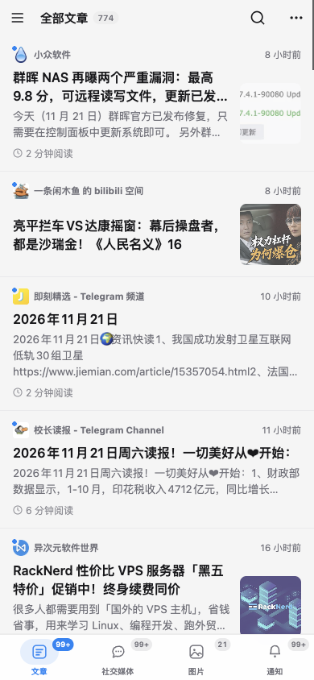
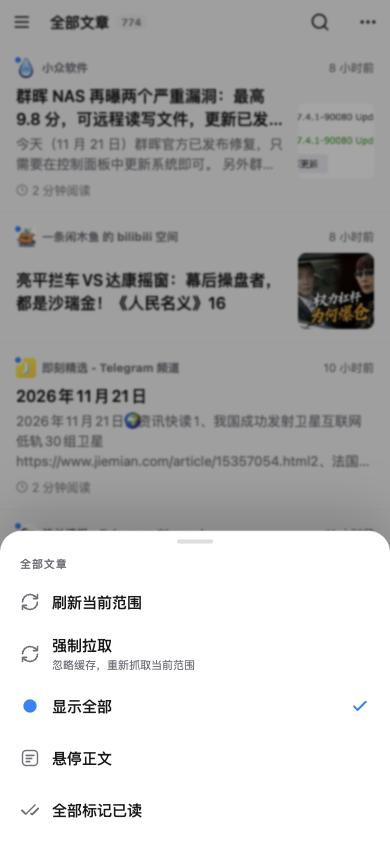
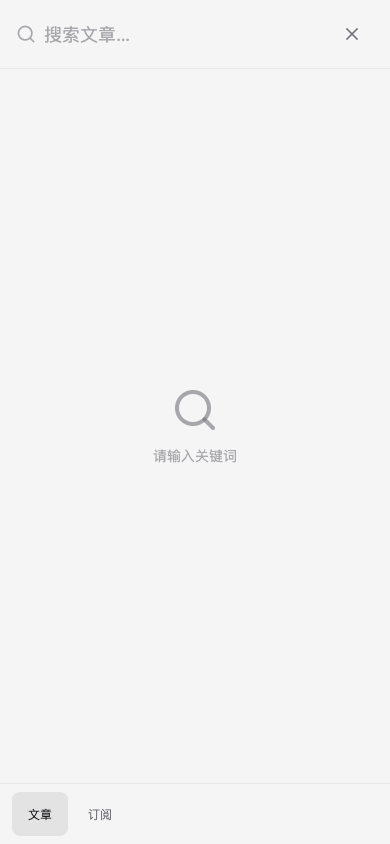
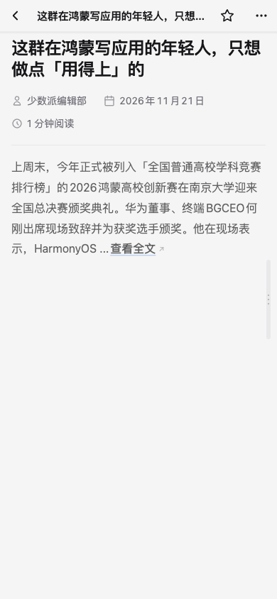
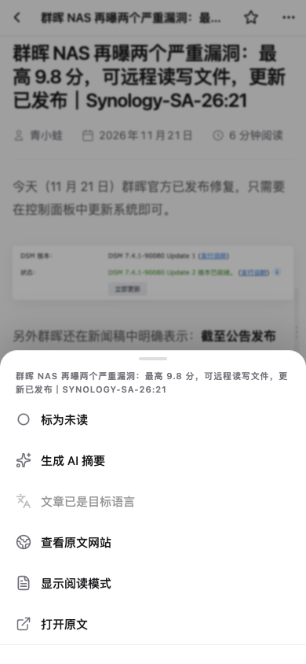
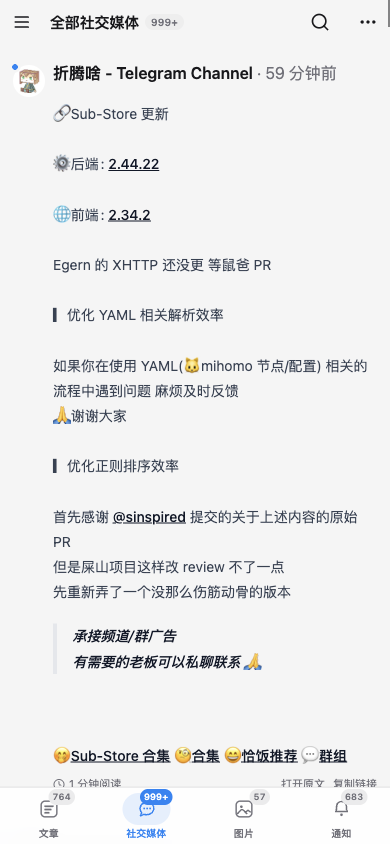
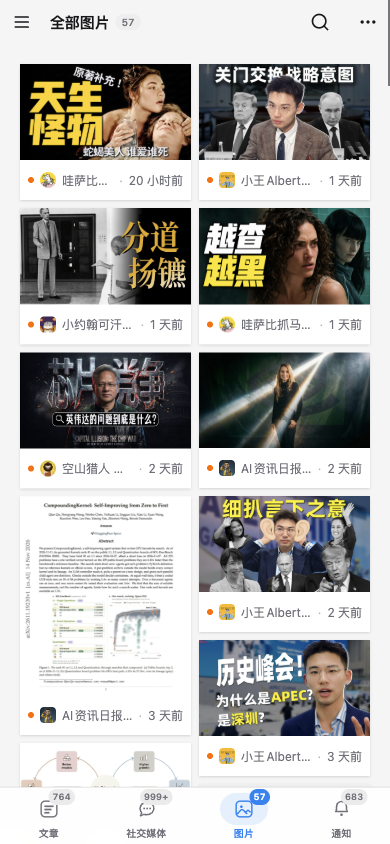
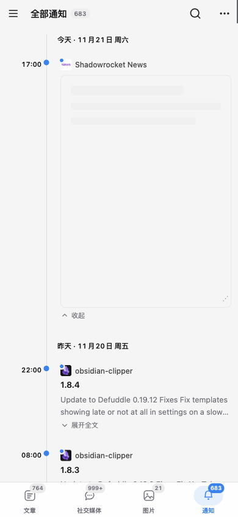
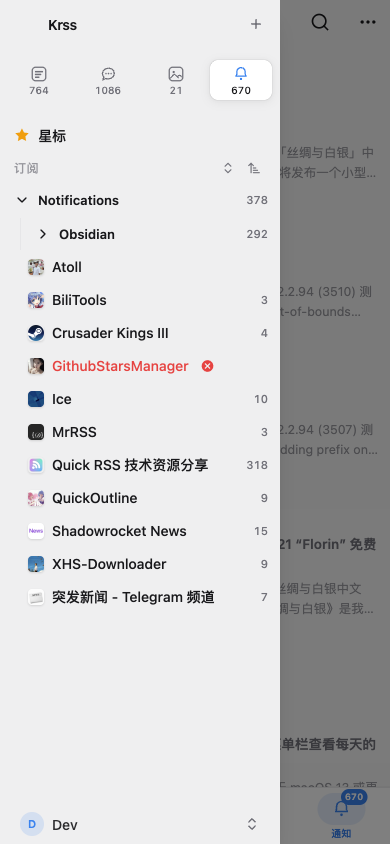
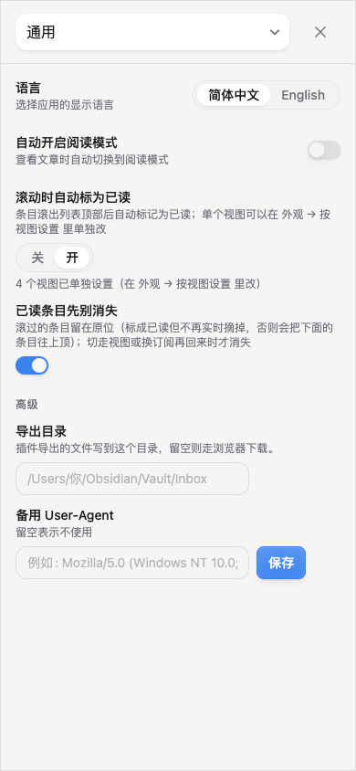

内容先落在纸上
列表是整宽的目录行，1px 细线分隔，不用层层卡片与阴影。缩略图 76px，标题 16/23 两行。
不再把桌面三栏塞进手机。v2 以纸面为底、以拇指区为界：顶栏只留标题与两个入口， 底部用四条内容轨切换文章 / 社交 / 图片 / 通知，所有阅读动作收进底部操作面板。
列表是整宽的目录行，1px 细线分隔，不用层层卡片与阴影。缩略图 76px，标题 16/23 两行。
内容类型常驻底栏；搜索、更多在顶栏两端。详情页的 6 颗小按钮收进一个 52px 行高的底部面板。
强调色只标记未读、当前内容轨与阅读进度。其余用纸、墨、灰阶，不堆玻璃与渐变。










| 项目 | 值 |
|---|---|
| 顶栏内容高 | 44px + env(safe-area-inset-top) |
| 底部内容轨 | 56px + env(safe-area-inset-bottom) |
| 列表行内边距 | 16px 左右 / 14px 上下 |
| 列表标题 / 摘要 | 16 / 23 · 13.5 / 20 |
| 详情正文 | 17 / 30 |
| 列表缩略图 | 76 × 76，圆角 8px |
| 操作面板行高 | ≥ 52px |
| 最小点击区 | 44 × 44px |
viewport-fit=cover safe-area-inset HeroUI v3 无 any 中英 i18n 同步